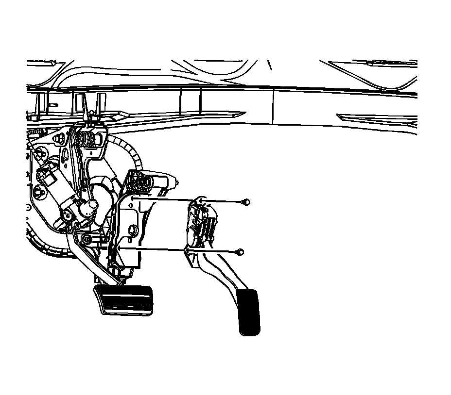
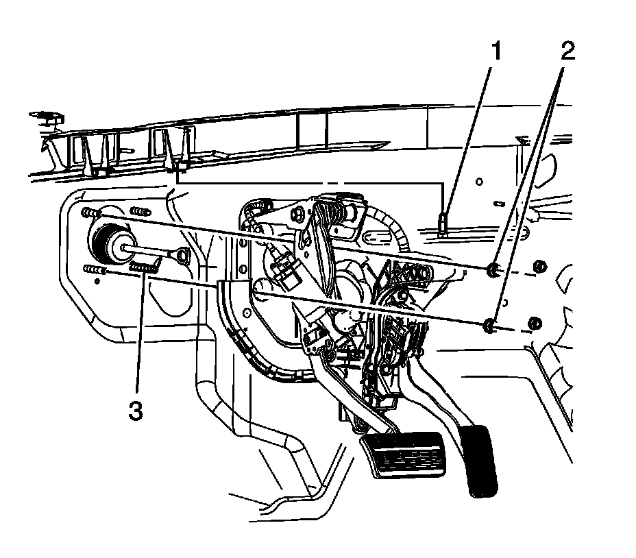

Brake Pedal Assembly Replacement
BRAKE PEDAL ASSEMBLY REPLACEMENT
REMOVAL PROCEDURE
1. Remove the 2 master cylinder nuts.
2. IMPORTANT: DO NOT disconnect the hydraulic brake pipes from the master cylinder.
Position the master cylinder aside and support with heavy mechanics wire or equivalent.
3. Remove the steering column from the vehicle.
4. Remove the transmission range selector cable support bolt from the instrument panel (I/P) reinforcement brace.
5. Disconnect the electrical connectors from the following components:
- The adjustable pedals motor assembly
- The memory sensor connector, if equipped
- The pedal position sensor
- The accelerator wiring harness connector

6. Remove the accelerator pedal position sensor assembly.
7. Remove the left side floor air outlet duct.
8. Remove the pushrod retaining clip (1) from the brake pedal pin (4).
9. Remove the brake pedal pushrod (5) and the stop lamp switch (2) from the brake pedal (3).

10. Remove the electronic adjustable pedal (EAP) bracket nuts (2) from the brake booster studs (3).
11. Remove the top EAP bracket bolt (1).
12. Move the brake booster forward until the studs are past the EAP bracket holes.
13. Remove the EAP assembly from the vehicle.
INSTALLATION PROCEDURE
1. With the aid of an assistant, position the brake booster to the vehicle.
2. Install the EAP assembly to the vehicle.
3. NOTE: Refer to Fastener Notice.
IMPORTANT: Tighten the EAP bracket nuts (2) before tightening the top EAP bracket bolt (1).
Install the EAP bracket nuts (2) to the brake booster studs (3).
Tighten the nuts to 25 N.m (18 lb ft).
4. Install the top EAP bracket bolt (1).
Tighten the bolt to 25 N.m (18 lb ft).
5. Install the accelerator pedal position sensor assembly.
6. Connect the electrical connectors to the following components:
- The adjustable pedals motor assembly
- The memory sensor connector, if equipped
- The pedal position sensor
- The accelerator wiring harness connector
7. Install the pushrod retaining clip (1) to the brake pedal pin (4).
8. Install the brake pedal pushrod (5) and the stop lamp switch (2) to the brake pedal (3).
9. Install the transmission range selector cable support bolt to the I/P reinforcement brace.
Tighten the bolt to 10 N.m (89 lb in).
10. Install the steering column to the vehicle.
11. Install the left side floor air outlet duct.
12. Install the master cylinder to the brake booster.
13. Install the 2 master cylinder nuts.
Tighten the nuts to 33 N.m (24 lb ft).
14. Verify the operation of the adjustable pedals.